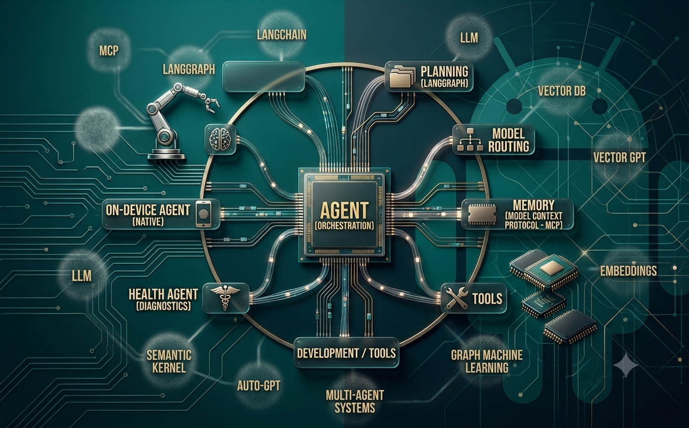
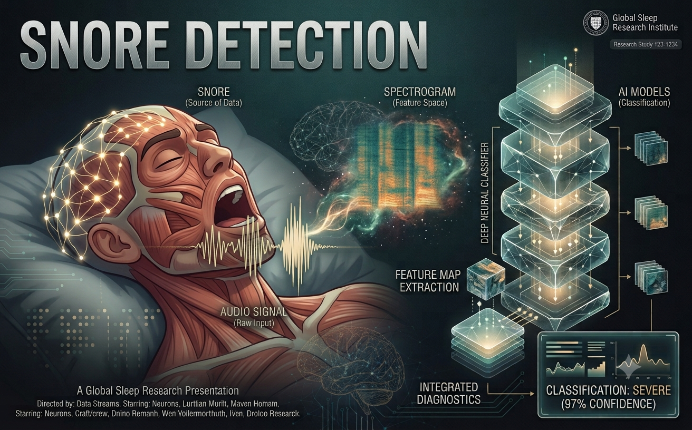
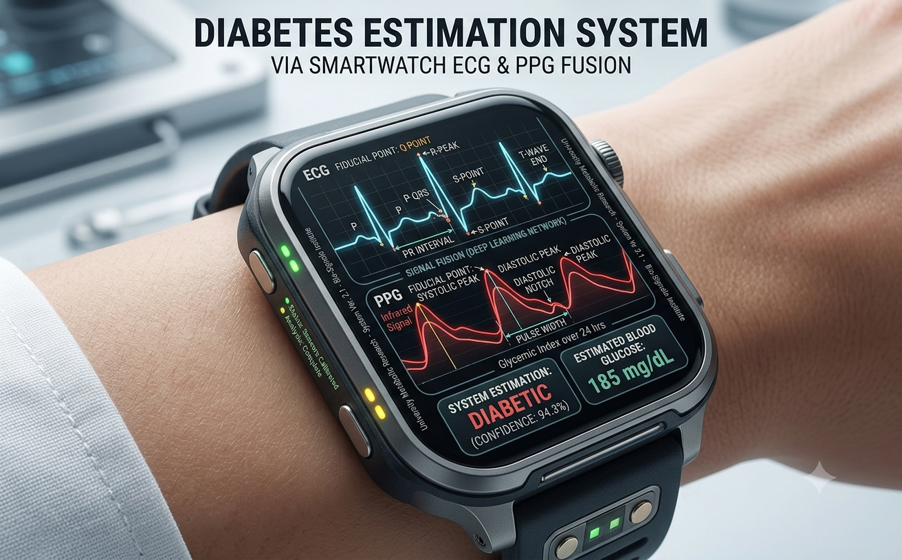
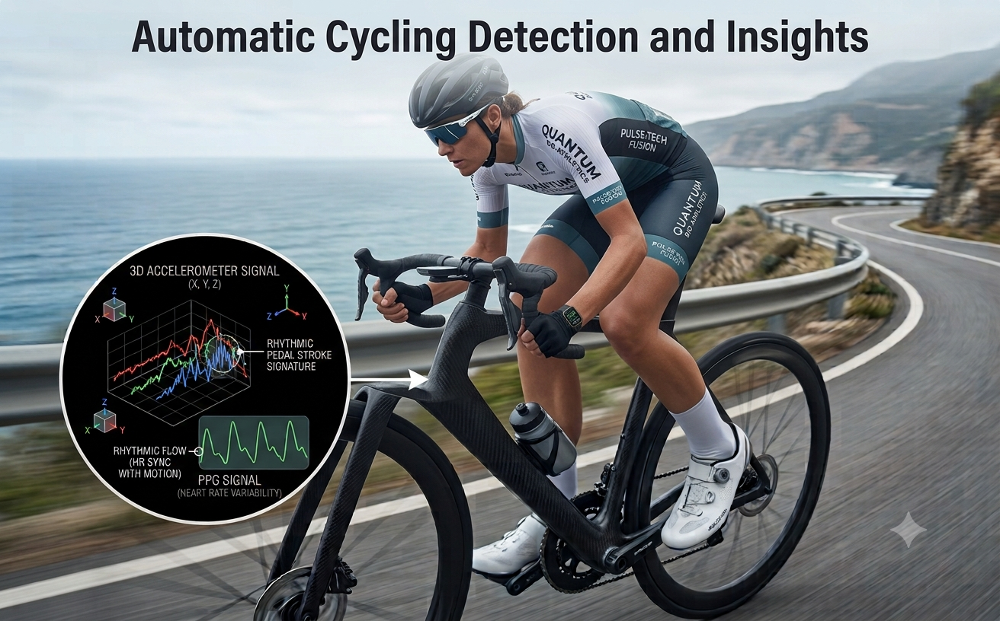
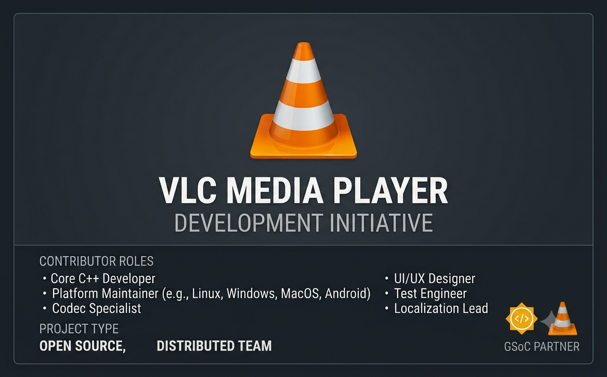

AI Lab · Personal Index
Razdutt Sarnaik
AI Scientist building agentic systems and healthcare intelligence.
Mobile agents, multi-model orchestration, and wearable health models shipped from research to commercialization.
01 · Interactive
Explore My Work
Ask about the work — agent platforms, healthcare AI, or open source.
Profile
Hey, I’m Razdutt
AI / ML engineer focused on Research and Agentic AI with experience architecting multi-model routing, tool orchestration, and memory systems. Proven track record of commercializing on-device wearable ML/DL snore and cycling detection. Open Source Developer
- Education B.Tech CSE, NIT Goa (CGPA 8.9)
- Focus Agentic AI Healthcare AI Research
- Open source GSoC 2022 · VideoLAN / VLC
Selected work
Projects
Open a project to explore the repo or jump to the project details.
- Android Mobile Agent Agentic Android platform — orchestration, memory, 50+ tools View in projects
- Snore Detection Sleep audio + PPG · spectral attention · 95% accuracy View in projects
- Non-Invasive Diabetic Status Detection ECG/PPG time-series modeling · patents under process View in projects
- Cycling Detection Dual-ANN activity detection · ~92% accuracy View in projects
- VLC · Google Summer of Code FFmpeg libavfilters · 18 audio filters in VLC Open GitHub
- Guitar Chords Recognition CNN on melspectrograms for chord prediction Open GitHub
- Agrovision Vision project · public repository Open GitHub
- SIC-XE Assembler Relocation, control sections, expressions Open GitHub
Capabilities
Skills
Healthcare AI
ML / DL
Frameworks
Languages
Tools
Off-lab
Fun
Things that keep the rest of the system sharp.
- Calisthenics
- Guitar
- Biking
- Cricket
- Basketball
- Puzzles
02 · Projects
Projects
Platforms and products led from architecture through deployment.
Active

Android Mobile Agent
↗Agentic Android platform — multi-agent orchestration, memory, hybrid model routing across 10+ LLMs, and 50+ tools for autonomous device workflows, including a dedicated Health Agent.
View overview
Shipped

Snore Detection
↗Real-time snore detection using sleep audio and PPG with an attention architecture and spectral attention, achieving 95% accuracy. Added as a feature to sleep insights.
View overview
Research

Non-Invasive Diabetic Status Detection
↗Physiological time-series modeling on smartwatch ECG and PPG for non-invasive diabetic status detection, with related patents under process.
View overview
Shipped

Cycling Detection
↗Dual ANN-based cycling activity detection from wearable sensor streams, commercialized at ~92% accuracy for real-time tracking.
View overview
Open source

VLC · Google Summer of Code
↗Integrated FFmpeg libavfilters into VLC for 18 audio filters, with dynamic filtering GUI and libVLC entry points — shipped with the global VideoLAN community.
Open GitHub03 · Research lanes
Where the lab focuses
Agentic AI
Planning, tool use, memory, model routing, on-device agents.
Healthcare AI
ECG/PPG modeling, HRV, wearable inference, health agents.
Systems ML
Quantization, TFLite/ONNX, production pipelines, patents in process.
04 · Contact
Collaborate with the lab
Open to deep technical conversations on agents, healthcare AI, and production ML systems.